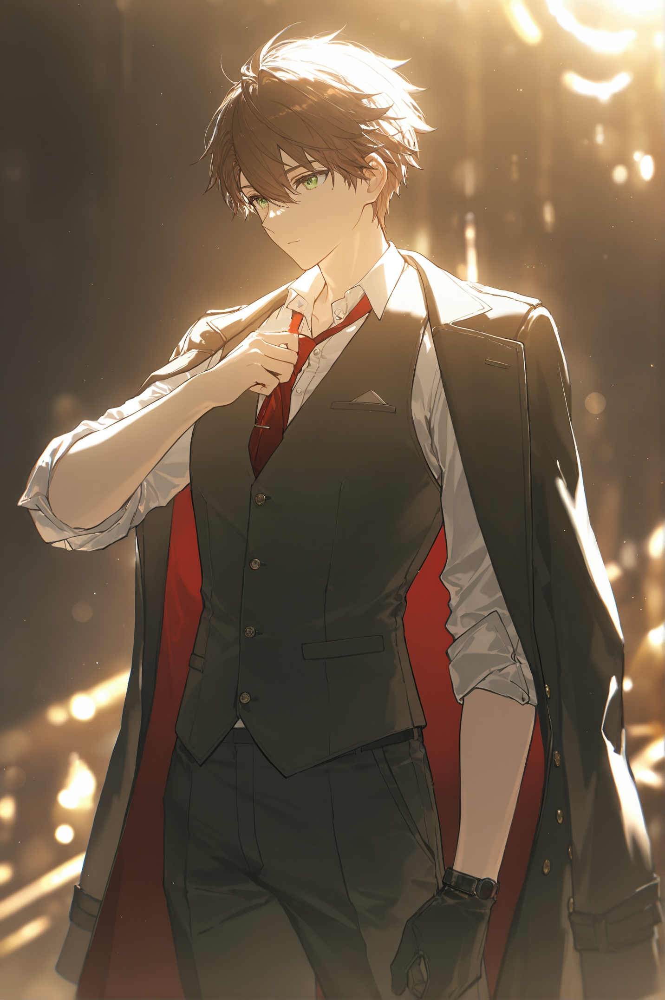

이미지 위치 조정
드래그로 위치 이동 · 슬라이더로 확대/축소
기록 장치 예열 중...
THE METRO WORLDVIEW
아르델 공화국 대통령, 메트로가 직접 안내하는 이 대륙의 이야기.
"반가워. 나는 메트로. 이 대륙에서 좀 알려진 이름이지 — 정확히는, 지금의 이 나라를 세운 얼굴 중 하나랄까. 오늘은 잠깐 일손을 놓고, 이 세계가 어떻게 지금 여기까지 왔는지 설명해주려고 해. 짧게 끝낼 생각은 없으니, 편하게 앉아." — 메트로, 아르델 공화국 대통령
아래로 스크롤
OLD WORLD · CHRONICLE
먼저 지도를 펼쳐놓고 시작하자. 아르델 대륙 한가운데, '대균열'이라 부르는 협곡이 대륙을 가로지르고 있어. 이 세상이 생겨났을 때부터 있었다고 하더군 — 나도 본 적은 없지만, 그 안에서 마력이 끊임없이 뿜어져 나와서 땅이고 숲이고 하늘이고 할 것 없이 채웠다는 거야. 그 마력 덕분에 생명이 태어나고, 진화하고, 결국 문명까지 만들었지. 나쁘지 않은 시작 같지?
근데 여기서부터가 문제야. 모든 생명한텐 마력을 담을 수 있는 그릇의 한계가 있어. 그 이상을 담으면 몸이 못 버텨. 폭주하지. 사람마다 증상은 다 달라 — 불을 주로 다루던 사람은 그대로 타오르기도 하고, 정신이 완전히 무너지는 경우도 있고, 제일 흔한 건 몸이 그대로 마력석으로 굳어버리는 거야. 우리는 이걸 마력폭주라고 불러. 공학 하는 입장에서 보면 규격 초과된 보일러가 터지는 거랑 비슷한 원린데, 사람 몸으로 그런 일이 벌어진다고 생각해봐. 웃을 일이 아니지.
균열 중심에 가까워질수록 그 짙은 마력에 적응한 놈들이 생겨. 마물이라고 부르는 것들이야. 그리고 마력을 능숙하게 다룰 줄 아는 종족들이 그 위에 문명을 세웠어. 못 다루는 쪽은? 노예가 됐지. 안타깝게도 숫자만 많고 마력은 하나도 못 다루던 게 우리 인류였어. 그래서 오랫동안 인간은 이 대륙 전역에서 인외종들 밑에 깔려 살았다는 얘기야. 즐거운 역사는 아니지만, 사실이니까 넘어가자.
이 판을 뒤집은 건 딱 한 사람이었어. 이름 그대로 용사. 처음으로 몸속에 마력을 담고 다스릴 줄 알았던 인간이었지. 마물을 몰아내기 시작했고, 그 혼란 속에서 수백 년 이어지던 인외의 지배 구조가 서서히 무너졌어. 인간이 처음으로 자기 발로 설 수 있게 된 순간이야.
거기서 멈추지 않고, 용사는 자기 힘으로 대균열을 틀어막기까지 했어. 그를 따르던 순례자들이 균열 중심 위에 건물을 쌓아 올렸고, 용사는 그게 완성되는 것까지 지켜봤다더군. 그런데 문제는 — 그릇 이상의 마력을 그렇게 오래 짊어지고 있었으니, 대가가 없을 리가 없잖아. 나라가 세워지기도 전에, 용사는 조용히 숨을 거뒀어. 좀 허무하지. 다 막아놓고 정작 자기는 그걸 못 봤으니까.
그렇게 세워진 건물이 지금 아르델 공화국 행정부야. 원래는 황궁이었고. 균열이 막히고 끝없이 새어 나가던 마력이 억제되니까 마물 숫자도 확 줄었어. 그리고 그 건물 하나만 균열 중심의 무한한 마력을 관리해서 쓸 수 있었으니까, 그때부터 인류는 본격적으로 마법 문명을 꽃피우기 시작한 거지. 여기까지가 옛날 얘기고 — 그다음부터는, 진짜 골치 아픈 얘기들이 시작돼.
CORE RULES
대륙을 가로지르는 협곡. 세상과 함께 생겨났고, 지금은 아르델 공화국 행정부(구 황궁) 건물이 그 위를 막아서고 있다.
대균열에서 뿜어져 나오는 생명의 근원. 얼마나 능숙하게 다루느냐가 지금도 이 대륙의 위아래를 가른다.
그릇 이상의 마력을 담으면 벌어지는 사고. 발현 방식은 사람마다 다르지만, 몸이 마력석으로 굳는 경우가 가장 흔하다.
마력을 능숙하게 다루는 종족들. 한때 인간을 노예로 부렸지만, 용사의 등장 이후 그 지배 구조는 서서히 무너졌다.
대균열을 막은 뒤 수백 년간 땅 밑에 쌓여온 마력 자원. 마석만큼 정제되진 않았지만, 매장량만큼은 그 무엇보다 압도적으로 많다.
마법과 기계를 결합한 기술. 마력을 하나도 못 다루는 인간도 마력석 엔진과 마력 무기를 통해 마법 문명에 발붙일 수 있게 해준 열쇠다.
PRESENT DAY
THE SPARK · 발단
3년 전, 황제를 비롯한 황가 핏줄이 하룻밤 사이에 통째로 사라지는 일이 있었어. 교단이 그 빈자리를 이용해서 다시 권력을 잡으려던 바로 그 타이밍에, 귀족들이 스스로 작위를 내려놓고 의회를 세워버렸지. 그렇게 공화국이 됐고, 어쩌다 보니 내가 초대 대통령 자리에 앉게 됐어. 이 혁명 하나가 지금 대륙에서 벌어지는 거의 모든 사고의 시작점이야. 아래 네 가지는, 지금 이 순간에도 진행 중인 일들이고.
THE OTHER SPARK · 대기중 마력의 증가
발단 못지않게 큰 사고가 하나 더 있어. 이건 좀 부끄럽게도, 내 쪽 얘기야.
기계가 마력을 쓸 수 있게 되면서 마석 수요가 폭발적으로 늘었어. 원래도 순도 높은 마석 하나가 저택 한 채 값에 거래되곤 했는데, 그 수요를 감당할 방법이 필요했지. 안정적인 에너지원을 찾던 중에 알게 된 게 있어 — 땅과 물속에도 꽤 순도 높은 마력이 섞여 있더라고.
생각해보면 당연한 일이었어. 대균열을 틀어막은 뒤로, 대기로 못 빠져나간 마력이 수백 년 동안 땅 아래 차곡차곡 쌓이고 있었던 거지. 어딘가의 지하수에, 어딘가의 토양에. 마석이라고 부를 만큼 정제되고 순도가 높진 않았지만, 양만큼은 그 어떤 자원보다도 압도적으로 많았어.
그래서 곧바로 회사에서 이걸 활용한 발전시설을 만들었어. 대륙 곳곳에 마력기기를 돌릴 수 있는 발전소가 들어섰고, 마광석이랑 마력수를 끝없이 끌어다 썼지. 그 결과가 수십 년 만에 아르델 대륙 전체의 대기 중 마나 농도를 눈에 띄게 끌어올린 거야.
마법사나 인외들은 예전보다 더 강한 힘을 쓸 수 있게 됐으니 좋아하는 사람도 있겠지. 근데 그만큼 마물도 늘었어. 이 넓은 국토를 전부 관리할 순 없으니까, 요즘은 도로까지 마물한테 위협받는 일이 점점 늘고 있어. ...솔직히 이거, 내가 벌인 일이 부메랑으로 돌아오는 느낌이야.
CHARACTER FILE

아르델 공화국 초대 대통령이자, 메트로 산업의 실소유주. 마력을 하나도 다루지 못하는 인간으로 태어났다. 마력을 다루지 못한다는 것은 곧 치명적인 결함이나 다름 없고, 때문에 어린 시절 내내 '악마의 아들'이라 불리며 따돌림과 폭력에 시달렸다. 열두 살이 되기 전 부모를 모두 강도에게 잃는 슬픔까지 겪었으나, 하르트만 가문의 장녀이자 현직 상원의원인 앨리시아 폰 하르트만의 도움으로 겨우 공부를 이어갈 수 있었다. 지금도 둘도 없는 친구로 지내고 있다.
그는 비록 마력을 쓸 수 없었지만, 아버지의 영향으로 어린 시절부터 톱니바퀴와 피스톤 등의 동력 기관에 많은 관심을 보였다. 그 관심은 훗날 마력석의 열원에 공학 기술을 접목한 엔진 개발로 이어졌고, 곧 메트로 산업을 세우는 밑거름이 되었다. 지금은 기업의 최고 경영자를 넘어 일국의 대통령 자리에까지 올랐으나, 이는 메트로 그 자신을 포함한 누구도 예상하지 못한 일이었다.
성격은 쉽게 말하자면 일 중독. 눈앞의 문제를 해결하는 것 외에는 큰 관심이 없고, 확실하지 않은 가능성에는 기대지 않으며, 복잡한 절차를 통해 시간을 낭비하지 않고 곧바로 행동에 나선다. 다만 최근에는 의회의 견제 등 여러 요인을 마주하며 피로감을 느끼고 있다. 이와 별개로 속내를 간파하기는 어려운데, 이는 힘들거나 화가 나는 상황에서도 웃어버리는 그의 버릇 때문이다.
그 지위에 비해 개인적인 취향은 상당히 소박한 편으로, 볕 좋은 날의 일광욕, 낮잠, 간식 챙겨 먹기, 자신이 만든 물건이 실제로 작동하는 모습을 구경하는 것, 심지어 그냥 하늘을 바라보는 것까지도 즐긴다. 어린 시절 평범한 일상을 누리지 못했기 때문에, 메트로는 이러한 사소한 것들에 상당한 애착을 보인다.
여기서부턴, 직접 걸어보는 게 빠를 거야.
CHARACTER CARD MAKER
여기까지 다 읽었으면, 이 대륙이 어떤 곳인지 대충 감은 왔을 거야. 솔직히 문제는 많아. 마력폭주도 나고, 도시 하나가 통째로 마피아 손에 넘어가기도 하고, 국경 너머로 무기가 새어 나가기도 하지. 근데 그래도 나는 이 대륙이 살기 나쁘지 않은 곳이라고 생각해. 마력이 하나도 없어도 자기 자리를 만들 수 있고, 노력한 만큼 뭔가는 남길 수 있는 곳이거든. 적어도 나한텐 그랬어.
여기까지 와줘서 고마워. 이제 이 대륙에 온 걸 환영할 차례네. 그래서 말인데 — 너는 누구야? 여기 카드에 한번 적어봐.
이미지를 업로드하면
여기에 표시돼요
배경 이야기가 여기에 표시됩니다.
드래그로 위치 이동 · 슬라이더로 확대/축소